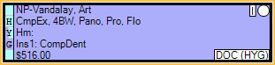

Time Bars
In the Appointments Module, vertical time bars show on the schedule as color-coded visuals of appointment length and provider time.
- By default, each square in the time bar is 10 minutes. To change see Time Increments in Appointment View Setup.
- Colored squares indicate provider time. The color is based on the provider's appointment color as set on the Provider.
- White squares indicate non-provider time.
- Abbreviated notes can be added to the time bar from the Edit Appointment window.
- Hygienists: If the appointment is marked as Is Hygiene on the Edit Appointment window and a hygienist is assigned, the hygienist is considered the provider and thus is indicated with colored squares (the hygienist's appointment color).
- Both Provider and Hygiene time can be noted on an appointment.
Appointment Time Bar: Shows on the left edge of every scheduled appointment. The bar indicates appointment's length and provider time. Appointment time bars can be narrowed or set to zero width in Preferences, Width of provider time bar on left of each appointment.
Provider Time Bars: Show on the far left of the appointment schedule, to the right of the time indicator, for all providers visible in the current appointment view. Each bar indicates provider time for an appointment based on the scheduled appointment's time pattern. Hover over the colored rectangle above the time bars to see the associated provider's name. These are set in Appointment View Setup. You cannot remove these, although you can show as few as one provider. Appointments for other providers will still show, just not their timebars.

Operatory Time Bars: Show to the left of an operatory to indicate the primary and secondary providers scheduled in the operatory. Up to two bars may show. The operatory time bars only show when an operatory has been assigned to a provider's time block in the Schedule.

Edit Provider/Assistant Time and Appointment Length
Provider time, assistant time, and appointment length is calculated automatically based on the time pattern of the procedures attached to the appointment. Time and length can be changed by editing the time pattern of the appointment or the time pattern of procedures.
Time Pattern of the Appointment: On the Edit Appointment window, an appointment time bar shows on the left.
Click and drag the slider to increase/shorten appointment time, or simply click on a square to increase appointment time. Click on a square to toggle between provider time (colored squares) and non-provider time (white squares).
Abbreviations can be typed into the right column which then appear on the time bar of appointment in the schedule as shown below..
Once you change an appointment's time pattern on this window, the appointment's time will be locked and any procedures added later will not automatically adjust the appointment time pattern.


Time Pattern of the Procedure Code: Every procedure code has a time pattern as part of its definition on the Procedure Code.
X indicates provider time (e.g., doctor or hygienist) and / indicates non-provider time (e.g., assistant time). Click a square to toggle between / and X. Click and drag the slider to lengthen the procedure's total time.

How Appointment Time is Calculated
When calculating appointment time, Open Dental follows the logic below:
One procedure: If there is only one procedure selected for an appointment, the appointment time pattern is the same as the attached procedure.
Multiple procedures:
- The procedure time patterns are combined when more than one procedure is added to the appointment.
- All provider (X) time is added together. Non-provider (/) time appears at the beginning and end of the pattern if it exists on the procedure.
- Non-provider time is not added together. Instead, the maximum amount of non-provider time on a procedure is added to the appointment. For example, if a procedure with ten minutes of non-provider time and a procedure with forty minutes of non-provider time are attached to an appointment, the appointment will show forty minutes of non-provider time.
Example: You attach 3 procedures to the appointment with the following time patterns:
- MOD amalgam - /XXX/
- Extraction - /X/
- Crown prep - /XXXX////
The resulting appointment time pattern is: /XXXXXXXX////
- The first three Xs are the amalgam.
- The fourth X is the extraction.
- The last four Xs are the crown prep.
- The first slash and last four slashes show the maximum non-provider time for all procedures on the appointment.
On the Edit Appointment window the appointment time pattern will look like this:

To create custom time patterns for multiple procedures attached to an appointment, see Appointment Types.
Additional examples: The following examples show the individual procedure time patterns, and the resulting time pattern when multiple procedures are added to an appointment.
- X + X = XX
- /X + X = /XX
- /X/ + /X/ + /XX/ + /XX/ = /XXXXXX/
- //XXX/ + X/ = //XXXX/
- //XXX/ + /X// = //XXXX//
Double and Triple Booking
When one provider has two or more appointments scheduled for the same time block, the Provider Time Bar will indicate the conflict.
- If two appointments are scheduled in the same time block (double booked), diagonal lines in the square will indicate the conflict.
- If three or more appointments are scheduled in the same time block (triple booked), solid black squares indicate the conflict.

To block double booking of provider time by procedure, see Appointment Rules.